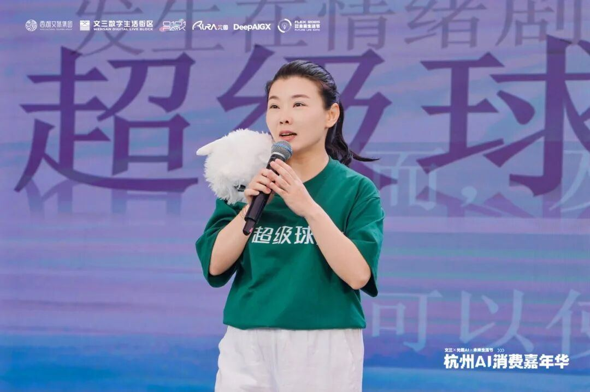
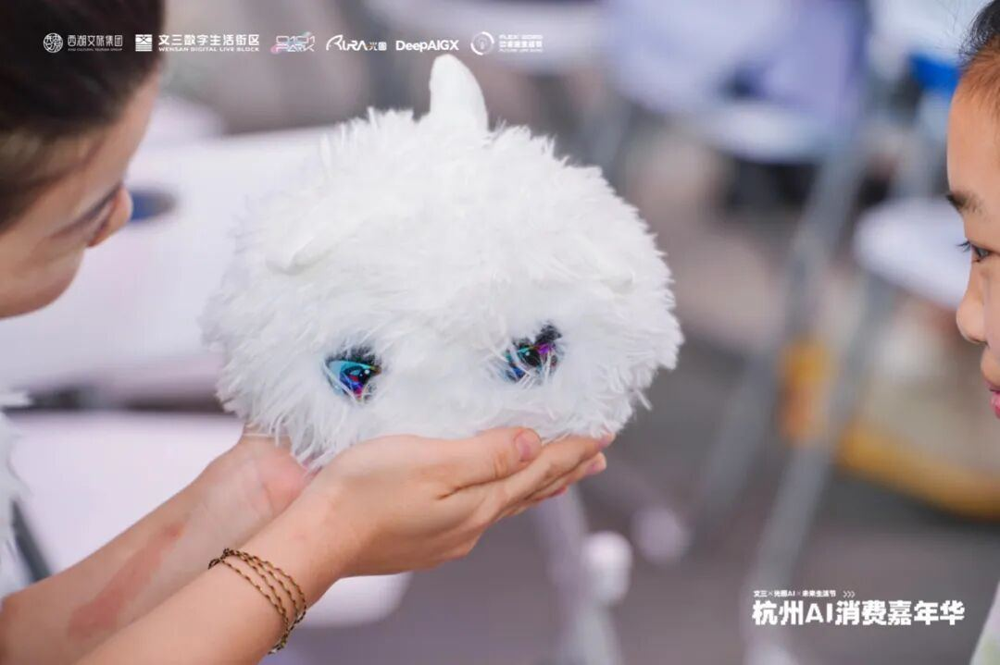

元晓帅博⼠介绍，2025年4⽉，“超级球球”团队向507位25岁-45岁的职场中⻘年发放了问卷，结果显⽰，90%的受访者表⽰⾃⼰承受着各种压⼒，74%的受访者表⽰，⾯对情绪困扰时⽆⼈陪伴。同时，根据公开数据，72%的过激⾏为，发⽣在情绪剧烈波动的时刻，但是，仅仅依靠及时有效的情绪疏导释放，便能使⾃杀⻛险降低60%。
团队研发的“超级球球”，正是⼀个在⽤⼾情绪发⽣的当下，能解读、共情，并为⽤⼾提供及时有效疏导帮助的AI伙伴。

在“超级球球”概念版Demo实际功能的演⽰中，其蠢萌的⽑绒外形、富有疗愈感的智能对话效果，也引发了投资⽅和现场观众的极⼤兴趣。
有两家知名创投机构表达了投资兴趣，并会持续与团队接触。也有观众主动添加了团队成员联系⽅式，表⽰超级球球正式上市后，⼀定会购买。
这次路演的成功，为“超级球球”的产品与需求验证提供了有⼒⽀撑，为正式版产品的研发打下了良好基础。
